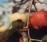

Gyümölcsös
Az almafa varasodása
Alma és körte moníliás gyümölcsrothadása
Almafa-lisztharmat
Őszibarack tafrinás levélfodrosodása
Csonthéjasok moníliás betegsége
Tűzelhalás
Szőlő
Szőlőlisztharmat
Szőlőperonoszpóra
Kiskert
Baktériumos lágyrothadás
Burgonyavész (paradicsomvész)
Fehérpenészes rothadás
Hagymaperonoszpóra
Szürkepenészes rothadás
Szántóföld
Búza kőüszög
Búza porüszög
Búza levélrozsda (vörösrozsda)
Búza szárrozsda (feketerozsda)
Gabona-lisztharmat
Kukorica golyvás üszög betegsége
Toxikus fuzáriózis